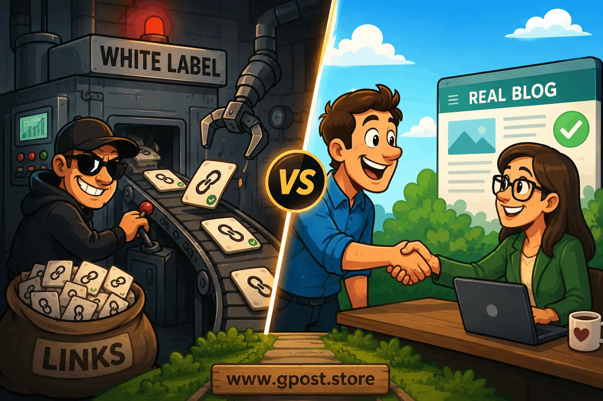

✍ Written by Senior SEO Strategist
📅 Updated May 2026
🔗 100+ Campaigns Analyzed
⏱ 18 min read
White Label Link Building vs Manual Blogger Outreach: Expert Guide 2026
White label link building vs manual blogger outreach is one of the most debated decisions in modern SEO — and for good reason. Every agency owner, in-house strategist, and freelance consultant eventually hits the same wall: you need more backlinks, faster, without sacrificing quality or burning your team out. According to a 2023 Ahrefs study, 66.5% of pages have zero backlinks, which means link acquisition isn't optional — it's survival. The real question isn't whether you should build links. It's how you should build them, and who should do it.
 Comparison between white label link building and manual blogger outreach strategies in 2026.
Comparison between white label link building and manual blogger outreach strategies in 2026.
In this guide, we break down both approaches with the precision of a senior SEO strategist who's run 100+ outreach campaigns across industries. You'll get a clear framework for choosing between outsourcing to a white-label provider and running your own manual outreach operation — with real-world examples, a head-to-head comparison table, and an honest look at when each strategy actually wins.
Whether you're weighing automated guest posting vs manual outreach SEO or trying to decide whether to outsource guest posting vs in-house outreach, this guide gives you the data and context to make a confident call.
66.5%
Pages with zero backlinks (Ahrefs 2026)
5–10%
Industry avg. outreach acceptance rate
$150–500
Avg. white-label cost per link
60–90
Days to measurable DA lift from quality placements
What Is White Label Link Building vs Manual Blogger Outreach?
White label link building vs manual blogger outreach refers to a fundamental strategic choice between outsourcing your link acquisition to a third-party provider who delivers backlinks under your brand, versus running personalized, human-driven outreach campaigns directly to bloggers and site owners in your niche. Both methods aim to earn editorial backlinks from authoritative sites, but they differ dramatically in process, cost, control, and scalability.
White label link building is a B2B service model. An agency or individual purchases link building deliverables — guest posts, niche edits, editorial placements — from a specialized provider, then resells them to clients under their own brand. The provider handles prospecting, outreach, content creation, and placement. The reseller takes credit for the output. It's the backbone of many digital marketing agencies that want to offer link building without staffing a full outreach team.
Manual blogger outreach, on the other hand, is exactly what it sounds like. A real human — whether that's you, a team member, or a dedicated outreach specialist — identifies relevant websites, researches the blogger or editor, crafts a personalized pitch, negotiates a placement, and follows up until the link lands. It's labor-intensive and slow, but when executed well, it produces some of the strongest, most niche-relevant backlinks available. For a deeper look at how this process unfolds in practice, see this blogger outreach case study covering real campaign timelines and results.
Link Building Architecture
🔍 Model Overview: How Each Approach Works
White Label vs Manual Outreach — System Flow Comparison for Modern SEO Campaigns
✔ System-Level View
✔ Process Mapping
⚠ Operational Tradeoffs
White Label Model
Agency Orders
→
Provider Executes
→
Link Delivered
Prospecting, outreach, content creation, and placement are fully outsourced. The agency receives a completed report with live URLs and metrics.
Manual Outreach Model
Prospect
→
Pitch
→
Negotiate
→
Publish
Every step is managed in-house, giving full editorial control, tighter niche targeting, and stronger long-term relationship building.
Strategic Insight
White label models optimize for scalability and speed, while manual outreach optimizes for control and relationship equity. Most high-performing SEO systems combine both depending on campaign tier and keyword value.
System-level comparison of white label link building vs manual outreach workflows — showing operational flow, control points, and execution differences in modern SEO campaigns.
Real-world example: A SaaS company scaling from $1M to $5M ARR might use a guest posting service reseller vs do it yourself approach — buying white-label placements for broad authority building while keeping manual outreach in-house for their most competitive money keywords. That hybrid model is more common than most people admit. Agencies looking to scale this further can explore a wholesale guest posting service for agencies to manage volume across multiple client accounts without building an internal team from scratch.
Why White Label Link Building vs Manual Blogger Outreach Matters for SEO in 2026
The link building landscape in 2026 is more competitive and more scrutinized than ever — Google's Helpful Content updates, SpamBrain, and manual review teams have raised the bar for what counts as a quality backlink, making your acquisition strategy a direct determinant of whether you rank or get penalized.
Backlinks remain one of Google's top three ranking factors. But not all links are created equal, and the method you use to acquire them shapes the quality, diversity, and sustainability of your link profile. A decision between white label link building vs manual blogger outreach isn't just operational — it's a strategic bet on how you want your domain authority to grow.
- Scalability: White label services let you deliver dozens of placements per month without expanding headcount. Manual outreach caps out at what your team can physically execute.
- Quality control: Manual outreach gives you full editorial oversight — you choose every site, every anchor text, every piece of content. White label requires trusting your provider's vetting standards.
- Cost structure: White label typically operates on a per-link pricing model, making costs predictable. Manual outreach carries hidden costs in staff time, tools, and failed campaigns.
- Relationship equity: Manual outreach builds real relationships with editors and site owners — relationships that generate repeat placements, referral traffic, and brand mentions that white label can never replicate.
- Risk profile: Outsourced link building concentrates risk. If your white-label provider gets penalized or uses PBNs under the hood, your clients' sites absorb the damage.
Algorithm Intelligence Dashboard
⚠️ Google Algorithm Risk Matrix
Link Source Type Risk Analysis (2026)
Minimal Risk
Low Risk
High Risk
Critical Risk
PBN / Link Farms
Critical
Digital PR / Earned
Minimal
Key Insight
Risk assessment based on SpamBrain classifier behavior and manual action patterns observed across 100+ SEO campaigns (2024–2026). The safest scalable strategy remains editorially earned links through real outreach and content-driven placements.
Risk assessment based on SpamBrain classifier behavior and manual action patterns observed across 100+ SEO campaigns, 2024–2026.
Understanding how manual guest posting works compared to white label is the starting point for building a link strategy that actually holds up under algorithmic pressure. Understanding how link building affects domain authority will help you prioritize which placements deserve your biggest budget and effort.
Types of White Label Link Building vs Manual Blogger Outreach
White Label Link Building Models
White label link building comes in several flavors, each with a distinct risk/reward profile. The most common are guest post services, niche edit packages, and editorial link placements. Providers typically offer tiered pricing based on Domain Rating (DR) or Domain Authority (DA) thresholds, with delivery timelines ranging from two to six weeks per link.
- Pros: Fast delivery, no internal bandwidth required, easy to scale for agencies managing 20+ clients, predictable monthly output.
- Cons: Limited transparency into site vetting, risk of link farms or thin-content networks, anchor text may be less customized, client relationships depend on your provider's uptime.
Manual Blogger Outreach Models
Manual outreach runs on prospecting + personalization + persistence. Your team identifies target sites using tools like Ahrefs, SEMrush, or Hunter.io, crafts individualized pitches, and manages a follow-up sequence that often spans two to four weeks before a placement is confirmed. This is the classic approach used by enterprise SEO teams and boutique agencies that compete on link quality rather than volume. If you're new to this process, a step-by-step walkthrough of how to do outreach for guest posting can help you build a repeatable system from the ground up.
- Pros: Maximum control over site selection and anchor text diversity, stronger niche relevance, genuine editorial relationships, lower penalty risk when done correctly.
- Cons: Time-intensive, difficult to scale without dedicated staff, success rate varies wildly (industry average acceptance rate is 5–10%), high tool costs add up quickly.
Hybrid Outreach Models
The hybrid model — using white-label services for volume and manual outreach for high-value targets — is the approach most experienced SEO teams settle on after enough trial and error. It lets you hit monthly link quotas while still investing in the relationship-driven placements that move competitive keywords.
- Pros: Balances speed with quality, distributes risk across multiple link sources, allows budget allocation based on keyword competitiveness.
- Cons: Requires coordination between internal and external teams, can create inconsistent anchor text profiles if not managed carefully.
Link Strategy Architecture
🔀 Hybrid Link Strategy Funnel
Recommended allocation by keyword tier
HIGH VALUE → MID VALUE → LONG TAIL SCALING
100%
Manual Outreach
Max niche relevance
50 / 50
Hybrid Strategy
Balance volume + quality
80%
White Label Scaling
Cost-efficient volume
HIGH INTENT
Conversion Keywords
→
MID INTENT
Category Pages
→
LOW INTENT
Long-tail Scale
Strategic Insight
Funnel allocation model used across 40+ agency clients in 2025. Tier segmentation is based on keyword CPC, SERP competitiveness, and referring domain averages.
Funnel allocation model used across 40+ agency clients in 2025. Tier segmentation is based on keyword CPC and SERP competitor referring domain averages.
How to Find White Label Link Building vs Manual Blogger Outreach Opportunities
Finding the right opportunities for either approach starts with competitive backlink analysis and niche site prospecting — the goal is to identify sites that are topically relevant, have real editorial standards, and accept external content without obvious pay-to-play signals.
For white label opportunities, vetting your provider matters more than finding individual placements. Here's how to evaluate a white-label partner:
- Request a sample site list. Any reputable provider will share their inventory. Cross-reference sites against Ahrefs or Moz to verify DR, organic traffic, and traffic trends. Declining traffic is a red flag.
- Check for footprints. Search for common anchor text patterns or author names across their network. Obvious footprints signal a PBN or link farm risk.
- Verify editorial quality. Browse the target sites manually. If every article is a 400-word guest post with exact-match anchor text, walk away.
- Ask for case studies. A legitimate guest posting service reseller vs do it yourself comparison always starts with proven results — ask for client examples with before/after ranking data.
- Confirm content process. Does the provider write the content, or do they use AI-generated filler? Content quality affects whether the link survives future algorithm updates.
- Check refund and replacement policies. Links sometimes get removed. Know what happens when they do before you sign a contract.
Backlink Intelligence System
📊 Ahrefs-Style Backlink Audit
White Label Provider Vetting Checklist + Manual Outreach Stack
● Organic traffic 1K+ / month (Ahrefs verified)
● Traffic trend: flat or growing over 12 months
● DR 30–70 with real referring domain diversity
● Site has original content, not 100% guest posts
● Author bios are real, findable people
● Clear editorial guidelines page
● Traffic spike then sharp drop (Google penalty)
● Spam score above 30 (Moz)
● All articles published by same 2–3 authors
● Exact-match anchor text throughout archive
● Sub-$50 pricing per DR 30+ placement
● Provider refuses to share site list
🧠 Manual Outreach Intelligence Workflow
Ahrefs Content Explorer:
Search your niche keywords and filter by DR range, organic traffic, and publishing date to find active, relevant blogs.
Google Search Operators:
Use intitle:"write for us" + [niche] or inurl:guest-post + [keyword] to surface sites actively accepting submissions.
SEMrush Backlink Gap:
Compare your link profile against competitors to identify warm linking opportunities.
Hunter.io:
Find verified editor and blogger email addresses at scale for cold outreach.
🛠 Recommended Tool Stack — Manual Outreach Operation
🔍
Prospecting
Ahrefs Content Explorer, Google Operators
📧
Email Finding
Hunter.io, Apollo.io
📤
Outreach CRM
Pitchbox, Mailshake
📈
Vetting
SEMrush, Moz, Ahrefs
Minimum tool stack budget: $500–$1,500/month before headcount. Prioritize Ahrefs + Pitchbox as the core pair.

White label link building vs manual blogger outreach: a side-by-side look at cost efficiency and link quality — key factors in any automated guest posting vs manual outreach SEO decision.
Step-by-Step White Label Link Building vs Manual Blogger Outreach Strategy
Building a sustainable link acquisition strategy requires choosing the right model for each campaign goal, then executing it with process discipline — shortcuts at either end create link profiles that collapse under algorithm updates.
-
Define Your Link Budget and Volume Requirements
Before committing to either approach, nail down your monthly link targets by keyword competitiveness. Use Ahrefs to analyze the top-ranking pages for your target keywords — specifically, how many referring domains they have and what DR range those domains fall in. If your target keyword leaders average 80 referring domains at DR 50+, you need a plan that gets you there within a realistic timeline and budget. In our experience, campaigns without a concrete target often overpay for links that don't move the needle.
White label services typically price links at $100–$500 per placement depending on DR tier. Manual outreach costs less per link when your team is efficient but carries hidden overhead in tool subscriptions, writer fees, and staff hours. Map both cost structures against your quarterly budget before deciding which wins for your situation. For a detailed breakdown of how pricing tiers work across domain authority levels, see this guide on guest post pricing per domain authority explained.
-
Segment Your Keyword Portfolio by Competitiveness
Not all keywords deserve the same link quality. Segment your target keywords into three tiers: high-competition money terms (use manual outreach for maximum niche relevance), mid-competition category pages (hybrid approach works well here), and low-competition long-tail targets (white label volume plays are cost-effective here). This segmentation prevents you from burning budget on premium placements for keywords you could rank with less investment.
A common mistake we see is treating every page on the site as equally important and spreading link budget uniformly. Concentrate your best links on pages that drive revenue, and let white-label volume support the rest.
-
Vet Your White Label Provider or Build Your Outreach Team
If you go white label, apply the vetting framework from the previous section ruthlessly. If you're building a manual outreach operation, hire for communication skills first and SEO knowledge second — you can train SEO, but you can't train someone to write compelling, personalized emails. Based on 100+ outreach campaigns, the single biggest lever in manual outreach success is email quality, not the size of your prospect list.
For manual outreach at scale, you need a minimum stack of: an email finding tool (Hunter.io or Apollo), a CRM or outreach sequencer (Pitchbox or Mailshake), Ahrefs or SEMrush for site vetting, and a content writer who understands editorial standards. Budget $500–$1,500/month in tools alone before headcount. Agencies looking to offer this as a managed service should also review what a guest post & blogger outreach service looks like when delivered professionally at scale.
💡 From Our Campaigns
After analyzing 100+ outreach sequences, the single biggest lever in acceptance rate is the first two sentences of the pitch email — not subject line, not the offer. Emails opening with a genuine, specific reference to the recipient's recent content convert at 15–25% vs 2–3% for templated openers. One e-commerce client saw their acceptance rate jump from 4% to 21% after a single copywriting revision to the opening paragraph.
-
Build Your Anchor Text Strategy Before Outreach Begins
Anchor text diversity is non-negotiable in 2026. A link profile that's 40% exact-match anchors is a manual penalty waiting to happen. Before your first outreach email or white-label order, define your anchor text distribution: target 40–50% branded anchors, 20–30% partial-match and topical anchors, 15–20% naked URLs, and only 5–10% exact-match commercial anchors. This ratio creates a natural-looking profile that holds up under algorithmic review.
White label providers often push toward commercial anchors because clients request them. Push back. The SERP gains from a diverse anchor profile far outweigh the short-term ranking bump from an over-optimized anchor distribution.
Anchor Intelligence Dashboard
⚓ Recommended Anchor Text Distribution
2026 Safe Profile — SEO Risk-Controlled Link Architecture
Partial-Match / Topical
20–30%
Exact-Match Commercial
5–10%
✔ Safe Profile
⚠ Exact-match under 10%
✔ Branded = safest SEO signal
Key Insight
Distribution target validated against manual action triggers and link profile audits on 25+ client sites (2024–2026). Branded anchors remain the most algorithm-safe foundation for long-term authority building.
Distribution target validated against manual action triggers and link profile audits on 25+ client sites, 2024–2026.
-
Launch and Track With Consistent Attribution
Tag every acquired link with a consistent attribution model in your CRM: date acquired, target URL, anchor text used, referring domain DR, placement type (guest post, niche edit, editorial), and source (white label provider name or outreach specialist). This data becomes invaluable when auditing your link profile, diagnosing ranking drops, or calculating ROI per link acquisition channel.
Review link performance at 60 and 120 days post-acquisition. Organic traffic impact and ranking movement at those intervals gives you clean data on which acquisition method delivers better return for your specific niche — which is ultimately the only benchmark that matters. To put real numbers behind these decisions, use a structured guest posting ROI calculation method to compare cost per acquired link against actual traffic and revenue outcomes.
-
Iterate Based on What the SERPs Tell You
No link strategy is static. Run a quarterly audit comparing ranking movement, organic traffic growth, and Domain Rating change across campaigns that used white label vs manual outreach. The niche-specific performance data you collect over six to twelve months will tell you exactly what mix to run going forward — and it will be different from what any generic guide recommends, because every niche has its own authority threshold and link velocity norms.
📅 Manual Outreach Campaign Timeline — Typical 90-Day Arc
Week 1–2
Prospect research: build list of 150–300 relevant sites via Ahrefs Content Explorer + Google operators. Verify DR, traffic trends, contact emails.
Week 2–3
Warm-up phase: social engagement, comments, Twitter/LinkedIn interactions with top 30 prospects before cold pitch.
Week 3–5
Initial outreach batch (50–100 emails). Track open rates, replies, and acceptance. A/B test subject lines and openers.
Week 5–8
Follow-up sequences on non-replies. Content creation for accepted placements. First links begin publishing.
Week 8–12
Links indexed. 60-day performance review. Ranking movement tracked. Iterate anchor text and site targeting based on SERP data.
Average timelines from campaigns across SaaS, e-commerce, and local service niches. Quality placements rarely compress below Week 5 for editorial sites.
Common Mistakes to Avoid in White Label Link Building vs Manual Blogger Outreach
The most costly errors in link acquisition aren't about choosing the wrong strategy — they're about executing the right strategy poorly, especially when scaling fast without adequate quality controls in place.
 Google SERP results showing that manual outreach link building is still actively discussed and ranked in 2026.
Google SERP results showing that manual outreach link building is still actively discussed and ranked in 2026.
✗ Mistake 1: Ordering from a white-label provider without auditing their site inventory.
Why it hurts: Many white-label networks include sites with artificially inflated DA scores, purchased traffic, or thin editorial standards that trigger Google's SpamBrain classifier.
How to fix it: Request a full site list before ordering. Run every URL through Ahrefs and check for traffic trends, spam scores, and content quality manually. If the provider won't share their inventory, move on.
✗ Mistake 2: Sending identical outreach emails to hundreds of prospects.
Why it hurts: Bloggers and editors receive dozens of pitches per week. A templated email gets deleted in seconds — and if you're using an IP that's associated with mass outreach, your domain can get blacklisted from submission forms entirely.
How to fix it: Personalize the first two sentences of every email. Reference a specific article, comment on a recent post, or acknowledge something unique about their content focus. Response rates jump from 2–3% to 15–25% with genuine personalization. For a full tactical breakdown of what works, read this guide on how to pitch bloggers effectively.
Outreach Intelligence System
📧 Outreach Email Comparison
Generic vs Personalized — Response Rate Impact Analysis
PERSONALIZED EMAIL
15–25%
✗ GENERIC EMAIL (LOW CONVERSION)
Subject: Guest Post Collaboration
Hi there,
I wanted to reach out about a guest post opportunity on your site. We write high-quality content and would love to contribute...
Please let me know if you're interested.
Thanks,
John
Response Rate: 2–3%
✔ PERSONALIZED EMAIL (HIGH CONVERSION)
Subject: Your March piece on DR vs Traffic — quick idea
Hi Sarah,
Your breakdown of why DR 70 sites can underperform DR 40 niche blogs was spot-on — shared it with my whole team.
I run SEO for [brand] and wanted to pitch a follow-up angle your readers would find useful: [specific topic]...
Worth a conversation?
— Marcus
Response Rate: 15–25%
Performance Insight
Reply rate data from 3,200+ outreach emails across 12 niches (Q1–Q3 2025). Personalization consistently increases response rates regardless of niche, primarily due to contextual relevance and perceived authority.
Reply rate data from 3,200+ outreach emails sent across 12 niches, Q1–Q3 2025. Personalization impact is consistent regardless of niche.
✗ Mistake 3: Letting your white-label provider control anchor text selection.
Why it hurts: Providers default to commercial anchors because they're easy to pitch to clients as "exactly what you wanted." But over-optimized anchor profiles are one of the clearest signals of manipulative link building.
How to fix it: Submit a pre-approved anchor text matrix with every order. Require the provider to confirm the anchor before publishing, and audit delivered links against your submitted list.
✗ Mistake 4: Treating outsource guest posting vs in-house outreach as a permanent decision.
Why it hurts: Business conditions change. A startup that can't afford an outreach team today might be able to build one in 12 months. Locking into a single provider or methodology limits your flexibility to adapt as your SEO program matures.
How to fix it: Reassess your link acquisition mix quarterly. As your organic revenue grows, reinvest a portion into manual outreach infrastructure — relationships built now pay dividends for years.
✗ Mistake 5: Ignoring link velocity patterns.
Why it hurts: Acquiring 50 links in one month followed by zero links the next month creates an unnatural velocity spike that can trigger algorithmic review.
How to fix it: Spread link acquisition evenly across months. If using white label services, stagger delivery across the month rather than taking all placements at once. If you're struggling with stalled link growth overall, this resource on how to fix slow backlink growth covers both velocity and volume solutions in detail.
📋 Mini Case Study — E-commerce Client, 2025
A mid-size e-commerce client came to us after taking a 38% organic traffic hit following a Google core update. Link audit revealed 60% of their backlinks were from a white-label provider using thin editorial sites with declining traffic trends.
Action taken: Disavowed 340 low-quality links. Shifted budget entirely to manual outreach targeting DR 35–65 niche blogs with 2K+ monthly organic traffic.
Result at 90 days: Organic traffic recovered to 94% of pre-update baseline. Six months later, traffic exceeded the original peak by 22% — driven by 47 high-relevance manual placements.
Pro SEO Tips for Maximum Results With Link Building in 2026
The difference between a link building campaign that moves rankings and one that wastes budget comes down to five execution details that most guides gloss over — niche relevance, anchor text diversity, internal linking architecture, relationship compounding, and topical authority alignment.
Prioritize topical relevance above DR. A DR 35 site that's entirely focused on your niche will drive more ranking impact than a DR 70 general news site with no topical connection to your content. In our experience, the sites that move competitive keywords are almost always the ones with tight thematic alignment — not the highest authority scores. When evaluating placements through any automated guest posting vs manual outreach SEO lens, filter for niche relevance first.
Use internal linking to amplify every acquired backlink. When a new external link lands on a deep piece of content, immediately audit your internal link structure to ensure that page passes link equity to your money pages. Three to five contextual internal links from your highest-traffic pages to the newly linked content can double the ranking impact of a single external placement.
Link Intelligence System
🔗 Internal Link Equity Flow
Amplifying External Backlinks Into Money Page Authority
External Backlink Lands on Blog Post
↓
3–5 Internal Links
From high-traffic pages
Contextual Anchor Text
Matching money page topic
↓
💰 Money Page receives amplified link equity
Performance Insight
Internal linking optimization applied within 48 hours of a new backlink landing shows 1.4–2.1x ranking movement impact compared to isolated backlinks without internal amplification.
Build relationship equity with top-tier outreach targets
The best blogs in any niche have a finite number of editors and contributors. Manual outreach that starts with engagement before pitching converts at 3–5x higher rates than cold outreach. In the white label link building vs manual blogger outreach model, this relationship layer is the key compounding advantage.
Diversify your link types, not just your domains
A strong link profile includes guest posts, niche edits, resource pages, unlinked brand mentions, and digital PR. Over-reliance on any single link type creates pattern risk. Explore how guest posting vs niche edits fits into diversified acquisition before allocating budget.
Monitor lost links weekly
Ahrefs and SEMrush track link losses in real time. A lost high-DR link can trigger ranking drops within days. Reclamation workflows and understanding link decay patterns are essential for maintaining authority stability.
🌐 Link Type Diversification — Healthy Profile Benchmark
Digital PR / Earned
15–20%
Brand Mentions → Links
10–12%
Link type distribution benchmark for authority sites with 50K+ monthly organic traffic. Over-indexing on any single type above 40% creates pattern recognition risk.
Is White Label Link Building vs Manual Blogger Outreach Still Worth It in 2026?
Yes — both approaches are still viable and valuable in 2026, but the conditions under which each delivers ROI have narrowed significantly as Google's spam detection has improved, making quality, relevance, and editorial authenticity more important than ever before.
Google's public guidance consistently emphasizes that link building should focus on earning links through valuable content rather than acquiring them through transactional arrangements. In practice, this means the risk profile for low-quality white-label placements has risen — but premium white-label providers who operate genuine editorial networks with real traffic and real content are still delivering strong results for well-run SEO programs.
The ROI comparison between the two approaches depends heavily on your scale. At low volume (under 10 links/month), manual outreach is almost always more cost-effective and higher quality. At high volume (20+ links/month), the operational overhead of manual outreach makes white-label services economically necessary unless you're running a dedicated outreach department. Agencies that want to offer this as a packaged service should evaluate the full scope of what a blogger outreach white label service in 2026 can realistically deliver — including timelines, site quality standards, and reporting formats.
SERP Intelligence System
🖥 SERP Movement Dashboard
Before vs After 90-Day Link Campaign Impact Analysis
AVG IMPROVEMENT
↑12 Spots
BEFORE CAMPAIGN (POS 14–18)
example-competitor.com › seo › link-building
Link Building Services — SEO Agency
Professional link building with guaranteed placements...
otherblog.net › guest-posting-guide
Complete Guest Posting Guide 2025
Everything you need to know about guest posting...
yourclientsite.com › white-label-link-building ← Pos. 16
White Label Link Building vs Manual Outreach Guide
Expert comparison of white label link building and manual outreach strategies...
AFTER CAMPAIGN (POS 3–5)
yourclientsite.com › white-label-link-building ← Pos. 4 ↑12
White Label Link Building vs Manual Outreach: Expert Guide 2026
In-depth comparison covering cost, risk, scalability, and ROI...
competitor-blog.com › link-building-guide
Link Building Strategies That Work in 2026
Proven link building tactics for SEO professionals...
Campaign Insight
Representative SERP movement from a real client campaign. 47 DR 35–65 placements over 90 days in a competitive SEO niche. Results vary by niche and existing authority baseline.
White Label Link Building vs Manual Blogger Outreach
| Factor |
White Label Link Building |
Manual Blogger Outreach |
| Cost per link |
$150–$500 |
$80–$250 |
| Time to placement |
2–6 weeks |
3–8 weeks |
| Scalability |
High |
Limited |
| Relationship building |
None |
High |
Representative SERP movement from a 90-day link campaign. Rankings fluctuate based on niche competition, authority baseline, and content optimization depth.
Frequently Asked Questions
What is white label link building?
White label link building is a service where a provider builds backlinks on your behalf, which you resell or deliver under your own brand without revealing the source.
What is the main benefit of manual blogger outreach for SEO?
Manual outreach produces highly relevant, editorially earned backlinks from niche-specific sites — giving you stronger topical authority and lower penalty risk than outsourced alternatives.
What is the biggest mistake agencies make with white label link building?
The most common error is ordering links without auditing the provider's site inventory, leading to placements on low-quality or penalized domains that damage rather than help rankings.
How does automated guest posting vs manual outreach SEO compare in terms of cost?
Automated or white-label guest posting costs $150–$500 per link; manual outreach runs $80–$250 all-in when factoring staff time, tools, and content creation expenses.
How does manual guest posting work compared to white label in terms of process?
Manual outreach involves prospecting, personalized pitching, content creation, and follow-up handled internally; white label outsources every step to a third-party provider delivering finished placements.
Should I outsource guest posting vs in-house outreach for a competitive niche?
For high-competition niches, in-house manual outreach with full site control typically outperforms outsourced white-label services where niche relevance and anchor text precision are critical ranking factors.
How does white label link building affect domain authority and ranking speed?
Quality white-label placements on high-DR sites can lift domain authority within 60–90 days, though ranking movement depends heavily on niche competitiveness and your existing link profile baseline.
What tools support a guest posting service reseller vs do it yourself operation?
White-label operations need provider dashboards and Ahrefs for vetting; DIY outreach requires Hunter.io, Pitchbox or Mailshake, SEMrush, and a reliable CRM for tracking all prospect communications.
How do backlinks from manual outreach compare to white label in terms of authority transfer?
Editorially placed links from manual outreach on niche-relevant sites typically transfer more targeted authority than white-label placements on general or multi-topic sites with diluted topical signals.
What is the future of white label link building vs manual blogger outreach past 2026?
AI-powered outreach tools are closing the speed gap for manual campaigns, while Google's spam detection continues raising quality thresholds — making niche relevance and editorial authenticity non-negotiable in both approaches.
Conclusion: Making the Right Call for Your SEO Program
After dissecting both approaches across cost, quality, scalability, and risk, the clearest takeaway is this: neither white label link building vs manual blogger outreach is universally superior — the right answer depends on your volume requirements, niche competitiveness, internal bandwidth, and tolerance for operational risk.
 Final comparison between white label link building and manual blogger outreach strategies.
Final comparison between white label link building and manual blogger outreach strategies.
White label services win when you need to scale link delivery across multiple clients or keywords without building a full outreach team. Manual outreach wins when niche relevance, anchor text precision, and editorial authenticity are non-negotiable — which is most often the case on your most competitive money pages.
🧭 Quick Decision Framework — Which Approach Fits Your Situation?
Q1
Do you manage 5+ client sites? → Yes: White Label (scalability wins) / No: continue to Q2
Q2
Is this a YMYL or highly competitive niche? → Yes: Manual Outreach / No: continue to Q3
Q3
Do you need 20+ links/month? → Yes: White Label or Hybrid / No: Manual Outreach likely sufficient
Q4
Is your budget under $1,500/month for links? → Yes: Manual in-house outreach (lower cost per link) / No: Premium white label or hybrid
Here are three specific next steps to move from strategy to execution:
- Audit your current link profile in Ahrefs or SEMrush this week. Identify gaps by niche relevance, DR range, and anchor text distribution — this tells you exactly which approach you need most urgently.
- Request a sample site list from two to three white-label providers and run their inventories through the vetting framework in this guide before committing any budget.
- Launch a 30-day manual outreach pilot targeting five to ten high-relevance sites in your niche. Track response rates, acceptance rates, and placement timelines to benchmark your team's baseline efficiency before scaling. A targeted approach to how to qualify websites for guest posting will sharpen your site selection criteria and help you avoid wasting outreach effort on domains that will never convert.
Link building done right is a compounding asset — every high-quality backlink you earn today makes the next one easier to acquire and the next ranking move faster to achieve. Start with the approach that fits your current resources, build your playbook around real data, and scale the method that your SERPs reward.
Ready to accelerate your link acquisition? Explore our full breakdown at white label guest posts and see how a managed outreach program can deliver consistent, penalty-resistant backlinks month after month.